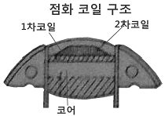
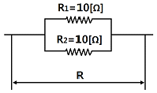
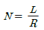
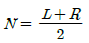
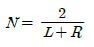
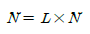

농기계정비기능사 (2012-04-08 기출문제)
1과목: 농기계정비
1. 다음 중 축전지 케이블 단자(터미널) 청소에 가장 적당한 것은?
- 탄산가스
- 그리스
- 전해액
- 탄산수소나트륨
(정답률: 62%)

2. 축전지의 용량 산정의 요소가 아닌 것은?
- 방전 전류
- 방전 시간
- 축전지 구조
- 부하 특성
(정답률: 56%)
3. 충전기 계기판에 있는 전류계의 눈금이 “0”을 지시 하고 있을 때는 어떤 상태인가?
- 충전되고 있다.
- 방전되고 있다.
- 전류계의 고장이다.
- 충전상태도, 방전상태도 아니다.
(정답률: 73%)
4. 퓨즈에 과전류가 흐르면 어떤 현상이 일어나는가?
- 연결이 좋아진다.
- 연결이 나빠진다.
- 연결부가 끊어진다.
- 아무런 관계가 없다.
(정답률: 90%)
5. 다음 중 가동 전동기에 대한 시험과 관계없는 것은?
- 저항 시험
- 회전력 시험
- 누설 시험
- 무부하 시험
(정답률: 65%)
6. 다음 중 점화장치에서 무접점식 마그네트 방식의 특징으로 옳지 않은 것은?
- 접점오손에 의한 고장이 없다.
- 2차 발생 전압이 안정되어 있다.
- 전기적 고장이 적어 수명이 길다.
- 정화시기가 매우 불안정하다.
(정답률: 80%)
7. 가솔린 기관에 사용되는 점화코일은 몇 개의 코일로 구성되어 있는가?

- 1개
- 2개
- 3개
- 4개
(정답률: 86%)
8. 콘덴서는 단속기 접점과 어떻게 연결되는가?
- 병렬로 연결
- 직렬로 연결
- 직병렬로 연결
- 아무렇게나 연결해도 작용은 변함없다.
(정답률: 67%)
9. 트랙터의 배터리 전압이 24[V]가 필요할 때 6[V] 배터리 4개를 연결 방법은?
- 직렬연결
- 병렬연결
- 직ㆍ병렬연결
- 좌ㆍ우 병렬연결
(정답률: 77%)
10. 다음 중 축전지 전해액의 액량은 극판위 몇 [㎜]가 적당하며 부족시 보충액으로 적합한 것은?
- 극판위 13~15[㎜], 액이 부족할 시 전해액 보충
- 극판위 13~15[㎜], 액이 부족할 시 묽은황산 보충
- 극판위 10~13[㎜], 액이 부족할 시 질산 보충
- 극판위 10~13[㎜], 액이 부족할 시 증류수 보충
(정답률: 82%)
11. 다음 중 점 광원으로부터 충분한 거리로 떨어진 빛과 수직한 면의 조도와의 관계는?
- 거리에 비례
- 거리에 반비례
- 거리의 제곱에 비례
- 거리의 제곱에 반비례
(정답률: 53%)
12. 다음 중 직류 발전기의 구성 요소에서 회전하면서 지속을 끊어 기전력을 유도하는 것은?
- 전기자
- 계자
- 정류자
- 브러시
(정답률: 46%)
13. 다음 중 전기저항이 가장 큰 전구는?
- 12[V]용 6[W]
- 12[V]용 12[W]
- 12[V]용 24[W]
- 12[V]용 36[W]
(정답률: 68%)
14. 아래 그림에서 합성저항 R의 크기는?

- 1[Ω]
- 5[Ω]
- 10[Ω]
- 20[Ω]
(정답률: 62%)
15. 길이 0.2[m]의 도체가 자속 밀도 1.0[Wb/m2] 되는 자계 안에서 자계와 직각 방향으로 10[m/sec] 속도로 이동할 경우 도체에 유기되는 전압[V]은?
- 1
- 2
- 3
- 4
(정답률: 52%)
16. 방제기 종류 중 살포농약의 사용약제를 분제형태로 사용되는 것은?
- 미스트기
- 연무기
- 살립기
- 살분기
(정답률: 65%)
17. 이앙기는 모의 종류에 따라 여러 형식으로 구분되는데 다음 중 이 형식에 해당되지 않은 것은?
- 줄묘식
- 산파식
- 조파식
- 원심식
(정답률: 68%)
18. 다음 건조기 중 빈(bin)이라고 불리는 용기에 곡물을 채우고, 구멍이 많이 뚫린 철판 밑으로부터 곡물이 변질되지 않을 정도의 소량의 공기를 통풍시켜 저장하면서 서서히 건조시키는 것은?
- 열풍 건조기
- 입형 건조기
- 평형 건조기
- 저장형 건조기
(정답률: 74%)
19. 관리기 기관의 무접점 점화장치의 진단방법이 틀린것은?
- 측정 전에 각 리드선의 접속을 확인한다.
- 전기회로 테스터로 각 저항을 측정한다.
- 측정 시 테스터의 ⊕, ⊖ 단자의 접촉에 주의한다.
- 콘덴서 측정 시는 방전이 되기 전에 측정한다.
(정답률: 67%)
20. 동력경운기에서 브레이크 작동이 불량할 때 원인이 아닌 것은?
- 변속기 오일 부족
- 브레이크 캠축 손상
- 브레이크 링의 마멸
- 브레이크 드럼의 마멸
(정답률: 78%)
2과목: 농기계전기
21. 디젤기관에 사용되는 과급기의 역할은?
- 출력의 증대
- 윤활성의 증대
- 냉각 효율의 증대
- 배기의 정화
(정답률: 78%)
22. 다음 중 변속장치 형식에서 회전하는 상태에서 기어의 물림이 용이하도록 주 속도를 맞추어 물리는 방식은?
- 섭동물림식
- 상시물림식
- 동기물림식
- 위성기어식
(정답률: 72%)
23. 기관에서 실린더 벽과 피스톤사이의 틈새로 혼합기(가스)가 크랭크 케이스로 빠져나오는 현상은?
- 블로다운
- 블로백
- 블로바이
- 베이퍼록
(정답률: 68%)
24. 경운기에 주로 사용되고 있는 조항 클러치의 형식은?
- 원판 클러치
- 원추 클러치
- 물림 클러치
- 유압 클러치
(정답률: 72%)
25. 트랙터기관 윤활장치에서 유압이 낮아지는 원인이 아닌 것은?
- 베어링의 오일간극이 클 때
- 윤활유의 점도가 낮을 때
- 유압조절 밸브 스프링장력이 약할 때
- 유압회로의 일부가 막혔을 때
(정답률: 43%)
26. 트랙터 로터리의 경운피치에 대한 설명으로 맞는 것은?
- 경운피치는 30cm 정도로 작업한다.
- 경운피치는 전진속도를 느리게 하면 커진다.
- 경운피치는 경운 날 1회전 할 때마다의 경운간격이다.
- 경운축의 회전수가 빨라야 경운피치가 커진다.
(정답률: 65%)
27. 동력경운기의 V벨트 긴장도를 조절하는 부품명은?
- 플라이 휠
- 기화기
- 텐션 풀리
- 작업 풀리
(정답률: 84%)
28. 다음 중 동력경운기의 작업조건에 따라 윤거(tread) 조절방법에 해당되지 않은 것은?
- 차륜의 허브로 차축을 섭동하는 방법
- 조향 클러치의 스프링을 교체하는 방법
- 조절 칼라를 차축에 교체하는 방법
- 좌우차륜을 서로 교체하는 방법
(정답률: 50%)
29. 디젤기관의 연료분사노즐의 종류에 속하지 않는 것은?
- 단공형 노즐
- 핀틀형 노즐
- 상시형 노즐
- 스로틀형 노즐
(정답률: 44%)
30. 일반적으로 트랙터 후륜 차축의 뒷면에 돌출되어 로터베이터, 모어, 비료살포기 등 구동형 작업기에 동력을 전달하는 장치는 무엇인가?
- 동력취출장치
- 토크 컨버터
- 차동장치
- 클러치
(정답률: 81%)
31. 트랙터의 차동장치에서 선회 시 오른쪽과 왼쪽의 바퀴의 관계식으로 맞는 것은?(단, N : 링기어 회전속도, L : 좌측바퀴회전수, R : 우측바퀴회전수 이다.)




(정답률: 59%)
32. 트랙터 앞 차륜 정렬과 거리가 먼 것은?
- 토인 측정
- 캐스터 측정
- 캠버 측정
- 핸들의 상하 유동 측정
(정답률: 72%)
33. 농용기관의 라디에이터 과열원인으로 거리가 먼 것은?
- 라디에이터 코어 일부가 막힘
- 밸브 간극이 맞지 않음
- 냉각수가 부족함
- 팬 벨트 파손
(정답률: 75%)
34. 트랙터 배속턴(Quick Turn) 기능을 잘못 설명한 것은?
- 회전반경을 최소화하기 위한 장치이다.
- 좁은 경작지에서 방향전환을 쉽게 한다.
- 흙 밀림현상을 방지 한다.
- 배속턴 기능은 고속에서 작동된다.
(정답률: 90%)
35. 기관의 성능 곡선도 상에 표현되지 않는 것은?
- 기관 출력
- 피스톤 평균속도
- 기관 토크
- 연료소비율
(정답률: 64%)
36. 트랙터에서 토인을 조정하는 것은?
- 앞바퀴 타이어
- 핸들
- 타이로드
- 허브 베어링
(정답률: 72%)
37. 트랙터의 주요제원에서 좌우 바퀴의 접지면 중심 사이의 거리를 무엇이라고 하는가?
- 윤거
- 축거
- 전폭
- 전고
(정답률: 62%)
38. 농기계 디젤기관의 압축압력을 측정하였더니 33.6kgf/cm2가 나왔다. 규정 압축 압력의 몇 %인가? (단, 규정 압축압력 48kgf/cm2이다.)
- 50%
- 60%
- 70%
- 80%
(정답률: 72%)
39. 4사이클 4기통 기관의 점화순서가 1-3-4-2 이다. 4번 실린더가 압축행정을 하고 있을 때, 다음 중 맞는 것은?
- 2번 실린더 배기행정
- 2번 실린더 흡입행정
- 3번 실린더 배기행정
- 3번 실린더 흡입행정
(정답률: 40%)
40. 기관의 회전 속도가 800 rpm 이고, 점화(착화)에서 최대 폭발 압력에 도달할 때까지 1/500초 걸린다고 하면 점화지연시간(착화지연시간)이 몇 도 진각 되어야 하는가?
- 9.6도
- 6.9도
- 3.6도
- 5.6도
(정답률: 50%)
3과목: 농기계안전관리
41. 트랙터의 견인력에 영향을 미치는 인자와 거리가 먼 것은?
- 중량
- 주행장치 종류
- 토양 상태
- PTO 회전수
(정답률: 74%)
42. 자탈 형 콤바인에서 탈곡 선별부에서 선별된 낟알은 몇 번구에 모이는가?
- 1번구
- 2번구
- 3번구
- 4번구
(정답률: 66%)
43. 전기시동식 경운기에서 시동키를 돌려도 시동모터가 작동되지 않을 때 점검사항이 아닌 것은?
- 퓨즈 상태
- 시동모터 배선 연결 상태
- 축전지 전압
- 발전기 배선 상태
(정답률: 77%)
44. 디젤 기관의 노킹 방지책이 아닌 것은?
- 세탄가가 높은 연료를 사용한다.
- 연소실의 온도를 높인다.
- 흡입공기의 온도를 높인다.
- 압축비를 낮춘다.
(정답률: 65%)
45. 동력경운기의 로터리에 흙과 폐비닐이 부착되었을 때 적절한 조치법은?
- 저속으로 운전한다.
- 토치램프로 연소시킨다.
- 후진한다.
- 기관정지 후 제거한다.
(정답률: 91%)
46. 농용 트랙터의 안전수칙에 해당하지 않은 것은?
- 밀폐된 실내에서 가동을 금지한다.
- 도로 주행 시 교통법규를 철저히 지킨다.
- 경사지를 내려갈 때 변속을 중립 위치에 두고 운전을 하지 않는다.
- 운전 중에 오일표시등, 충전표시등에 불이 켜져 있어야 정상이다.
(정답률: 80%)
47. 작업현장의 안전표지에 사용되는 색채 중 비상구 및 피난소, 사람의 통행표지는?
- 빨간색
- 노란색
- 파란색
- 녹색
(정답률: 92%)
48. 소형 농업기계의 장기간 보관 방법으로 적당하지 않은 것은?
- 팬 벨트를 느슨하게 보관
- 실린더 안에 소량의 오일을 넣고 5~6회 공회전시켜 압축 상사점의 위치로 보관
- 건조하고 통풍이 잘 되는 장소에 보관
- 비닐 포장을 씌워 사용장소에 보관
(정답률: 81%)
49. 납땜 작업도중 염산이 몸에 묻으면 어떻게 응급조치를 해야 하는가?
- 황산을 바른다.
- 물로 빨리 세척한다.
- 손으로 문지른다.
- 그냥 두어도 상관없다.
(정답률: 90%)
50. 다음 중 안전관리의 목적으로 거리가 먼 것은?
- 생산성을 향상시킨다.
- 경제성을 향상시킨다.
- 기업 경비가 증가된다.
- 사회복지를 증진시킨다.
(정답률: 77%)
51. 수공구의 사용 전 안전취급에 관한 사항에 해당하지 않는 것은?
- 해당 작업에 적합한 공구인가?
- 결함이 없는 공구인가?
- 기름이 묻어 있지 않는 공구인가?
- 땅바닥에 보관한 공구인가?
(정답률: 88%)
52. 다음 중 사고예방대책의 기본 원리 5단계에 해당하지 않은 것은?
- 작업책임자의 지정
- 사실의 발견
- 안전관리조직의 편성
- 시정책의 선정
(정답률: 69%)
53. 회전중인 연삭숫돌에 덮개를 설치해야 하는 직경의 크기 한도는?
- 5cm 이상
- 10cm 이상
- 15cm 이상
- 20cm 이상
(정답률: 61%)
54. 전기 안전 작업 중 틀린 것은?
- 정전기가 발생하는 부분은 접지한다.
- 물기가 있는 손으로 전기 스위치를 조작하여도 무방하다.
- 전기장치수리는 담당자가 아니면 하지 않는다.
- 변전실 고전압의 스위치를 조작할 때는 절연판 위에서 한다.
(정답률: 91%)
55. 농산물 운반용 지게차 운전자의 준수사항으로 맞지 않는 것은?
- 운전 중 급선회를 피한다.
- 물건을 높이 들어 올린 상태로 주행한다.
- 운전자 이외의 근로자를 탑승시키지 않는다.
- 안전작업을 위하여 시간을 재촉하지 않는다.
(정답률: 90%)
56. 방진마스크의 구비조건이 아닌 것은?
- 여과효율이 좋을 것
- 안면밀착성이 좋을 것
- 중량이 가벼울 것
- 시야가 좁을 것
(정답률: 94%)
57. 다음 중 분진에서 오는 직업병이 아닌 것은?
- 진폐증
- 열중증
- 결막염
- 폐수종
(정답률: 78%)
58. 작업장의 안전사항 중 잘못된 것은?
- 작업장 주위 안전사항은 항상 확인하여야 한다.
- 작업장의 제반 규칙을 준수한다.
- 공구 및 장구의 정돈은 필요시에만 한다.
- 인화물은 격리시켜 사용한다.
(정답률: 90%)
59. 정비 작업복에 대한 일반수칙으로 틀린 것은?
- 몸에 맞는 것을 입는다.
- 수건을 허리춤에 차고 작업한다.
- 기름이 밴 정비복을 입지 않는다.
- 상의의 옷자락이 밖으로 나오지 않게 한다.
(정답률: 92%)
60. 사다리식 통로의 설치 요령 중 옳지 않은 것은?
- 이동식 사다리식 통로의 기울기는 75도 이하로 할 것
- 발판과 벽과의 사이는 15센티미터 이상의 간격을 유지할 것
- 발판의 간격은 위로 올라갈수록 좁게 할 것
- 사다리가 넘어지거나 미끄러지는 것을 방지하기 위한 조치를 할 것
(정답률: 77%)